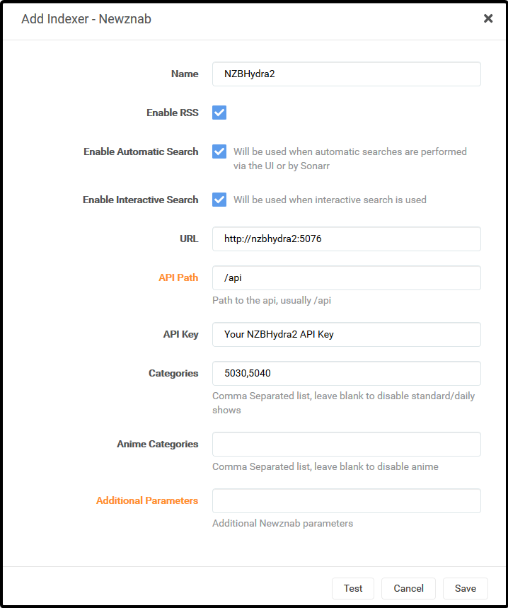
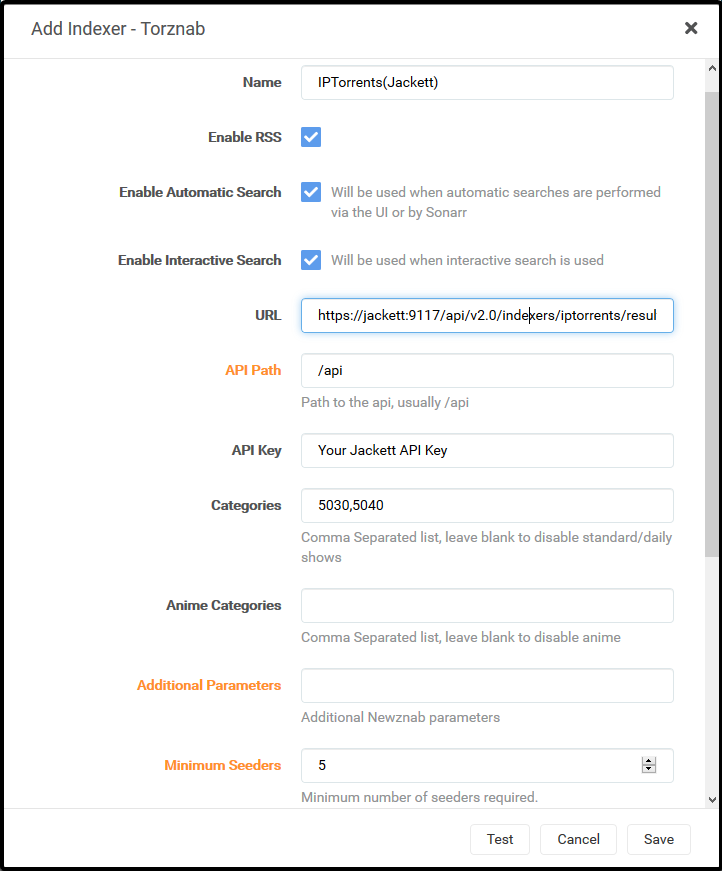
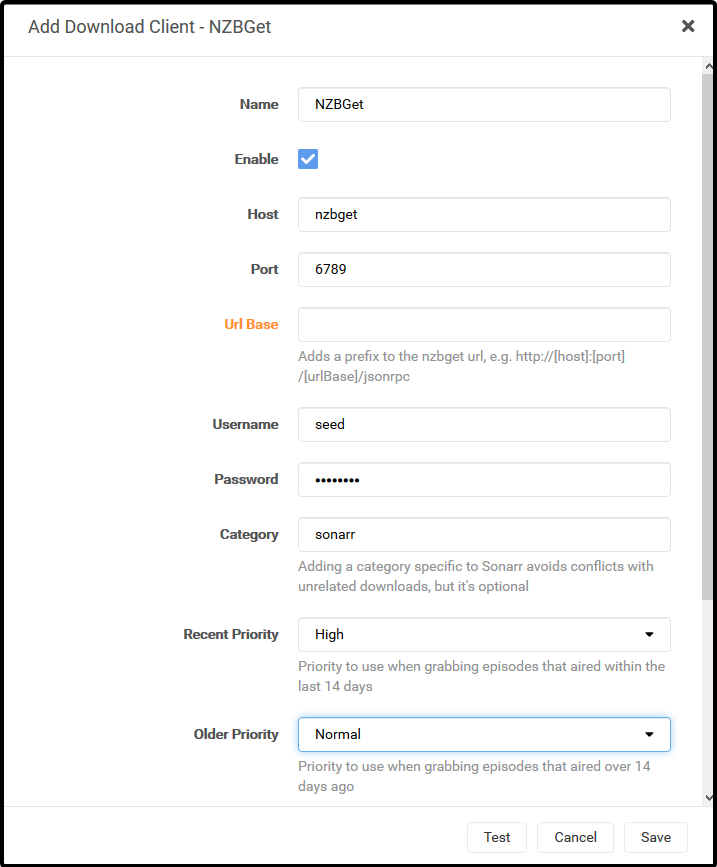
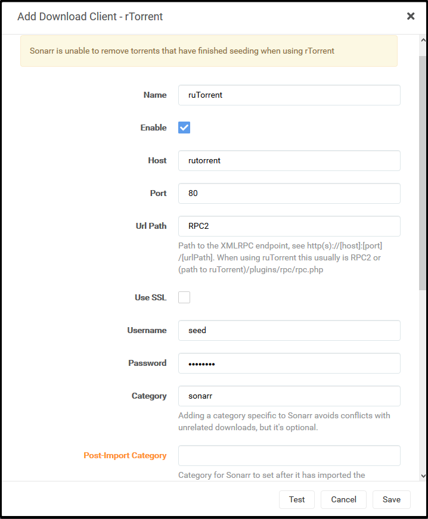
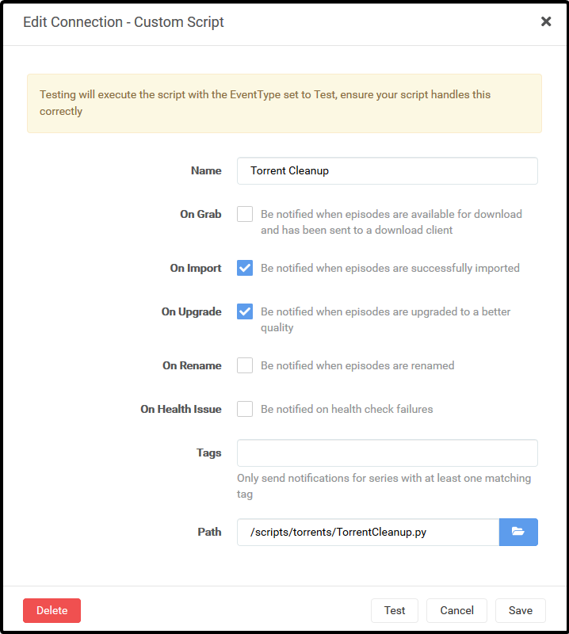
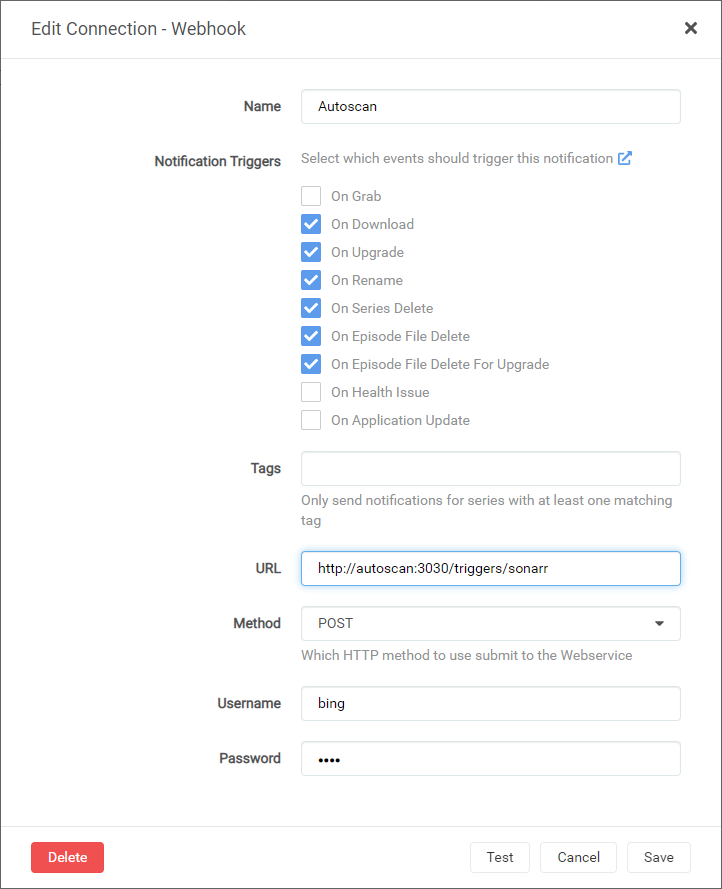
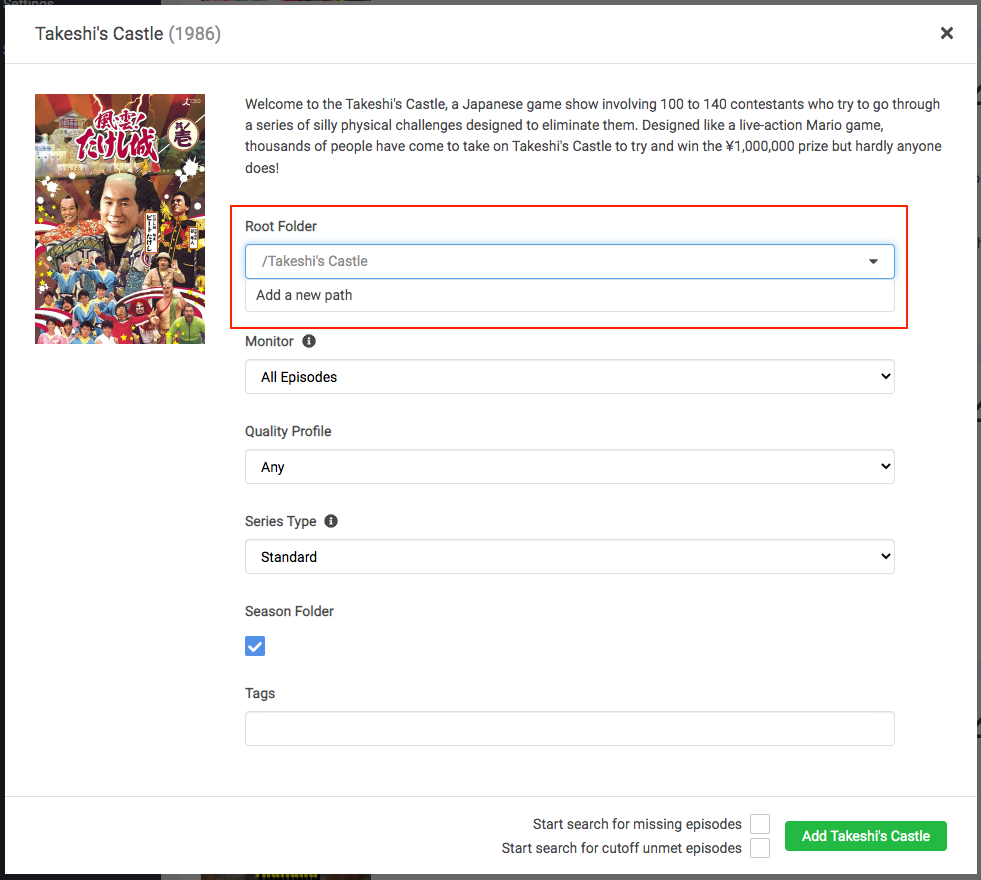

What is it?¶
Sonarr is a PVR for Usenet and BitTorrent users. It can monitor multiple RSS feeds for new episodes of your favorite shows and will grab, sort and rename them. It can also be configured to automatically upgrade the quality of files already downloaded when a better quality format becomes available.
| Details | |||
|---|---|---|---|
| Project home | Docs | Github | Docker |
URL¶
- To access Sonarr, visit
https://sonarr._yourdomain.com_
Settings¶
Click on "Settings" in the sidebar. Click "Show Advanced" at the top of the Settings pane.
Make changes in the following sections:
Settings
These settings control management of media files.
-
"Rename Episodes":
Yes -
"Replace Illegal Characters":
Yes -
Set your preferred naming format; here are some examples:
TRaSH' naming guide [Recommended[
Go here for the latest updates. These examples may be out of date.
Example:
Single Episode: The Series Title! (2010) - S01E01 - Episode Title 1 [AMZN WEBDL-1080p Proper][HDR][10bit][x264][DTS 5.1]-RlsGrp Multi Episode: The Series Title! (2010) - S01E01-E02-E03 - Episode Title [AMZN WEBDL-1080p Proper][HDR][10bit][x264][DTS 5.1]-RlsGrpStandard Episode Format:
{Series TitleYear} - S{season:00}E{episode:00} - {Episode CleanTitle} [{Preferred Words }{Quality Full}]{[MediaInfo VideoDynamicRange]}[{MediaInfo VideoBitDepth}bit]{[MediaInfo VideoCodec]}{[Mediainfo AudioCodec}{ Mediainfo AudioChannels]}{MediaInfo AudioLanguages}{-Release Group}for more examples and discussion see the reference: https://trash-guides.info/Sonarr/Sonarr-recommended-naming-scheme/
The TRaSH naming guide is recommended since some other tools, notably Plex Meta Manager, expect it in their default setup.
Plex's Naming Preference
Example:
/Gotham/Season 01/Gotham - s01e01 - Pilot.mkvStandard Episode Format:
{Series Title} - s{season:00}e{episode:00} - {Episode Title}Anime Episode Format:
{Series Title} - s{season:00}e{episode:00} - {Episode Title}Daily Episode Format:
{Series Title} - {Air-Date} - {Episode Title}Season Folder Format:
Season {season:00}Multi-Episode Style:
Prefixed RangeReference: https://support.plex.tv/articles/200220687-naming-series-season-based-tv-shows/
-
"Create empty series folders":
No -
"Delete empty folders":
No
-
"Skip Free Space Check":
No -
"Use Hardlinks instead of Copy":
Yes -
"Import Extra Files":
Yes(can be your preference) -
"Extra File Extensions":
srt, sub, idx
-
"Ignore Deleted Episodes":
No(can be your preference) -
"Download Propers":
No(can be your preference) -
"Analyse video files":
No -
"Change File Date":
None -
"Recycle Bin": blank (Rclone deletes are sent to Gdrive trash folder, anyway)
- Set Permissions:
No
- Click "Save".
These settings control indexers and related behavior.
-
Click Add Indexer (
+). -
Select "Newznab".
-
Add the following:
Name: NZBHydra2
Enable RSS Sync: Your Preference
Enable Search: Your Preference
URL:
http://nzbhydra2:5076API Key: Your NZBHydra2 API Key
Additional Parameters: Leave Blank
-
Your settings will look like this:

-
Click "Save" to add NZBHydra2.
Note: The "Test" will keep failing until you add an indexer in NZBHydra2.
Note: Each Indexer you have defined in Jackett will need to be added separately.
-
Click Add Indexer (
+) -
Select "Torznab".
-
Add the following:
Name: Indexer Name
Enable RSS Sync: Your Preference
Enable Search: Your Preference
API Key: Your Jackett API Key
Additional Parameters: Leave Blank
-
Your settings will look like this:

-
Click "Save" to add the indexer.
These settings control downloading behavior and clients.
-
"Enable":
Yes -
"Remove":
Yes(can be your preference)
-
"Redownload":
Yes -
"Remove":
Yes
-
Click Add (
+) -
Add a new "NZBGet" download client.
-
Add the following:
Name: NZBGet
Enable:
YesHost:
nzbgetPort:
6789Username: Your NZBGet Username
Password: Your NZBGet Password
Category:
sonarrUse SSL:
NoAdd Paused:
No -
Your settings will look like this:

-
Click "Save" to add NZBGet.
-
Click Add (
+) -
Add a new "rTorrent" download client.
-
Add the following:
Name: ruTorrent
Enable:
YesHost:
rutorrentPort:
80URL Path:
RPC2Use SSL:
NoUsername: Your ruTorrent Username
Password: Your ruTorrent Password
Category:
sonarrDirectory: Leave Blank
-
Your settings will now look like this:

-
Click "Save" to add ruTorrent.
These settings control connections to other applications or systems.
Torrent Cleanup Script is a custom script that will cleanup torrents from ruTorrent that were auto-extracted, but still being seeded. So if the script detects that .rar files are in the folder that Sonarr just imported from, it will delete the imported video file(s), leaving just the .rar files for seeding.
-
Click "Settings" -> "Connect".
-
Add a new "Custom Script".
-
Add the following:
Name: Torrent Cleanup
On Grab:
NoOn Download:
YesOn Upgrade:
YesOn Rename:
NoPath:
/scripts/torrents/TorrentCleanup.py -
The settings will look like this:

-
Click "Save" to add the Torrent Cleanup script.
-
Click "Settings" -> "Connect".
-
Add a new "Webhook".
-
Add the following:
Name: Autoscan
On Grab:
NoOn Import:
YesOn Upgrade:
YesOn Rename:
YesOn Series Delete:
YesOn Episode File Delete:
YesOn Episode File Delete For Upgrade:
YesTags: Leave Blank
URL:
http://autoscan:3030/triggers/sonarrMethod:
POSTUsername: AS SET IN AUTOSCAN CONFIG [defaults to Saltbox Username]
Password: AS SET IN AUTOSCAN CONFIG [defaults to Saltbox Username]
-
The settings will look like this:

-
Click "Save" to add Autoscan.
These settings control general aspects of Sonarr.
-
"Bind Address:
* -
"Port Number":
8989 -
"URL Base": blank
-
"Enable SSL":
No(SSL is handled by Traefik)
- "Use Proxy":
No
- "Log Level":
Debug
- "Enable":
No(your preference)
These settings may be grayed out or unavailable; skip this if that's the case.
-
"Branch":
main -
"Automatic":
Off
- Click "Save".
TV Path¶
-
When you are ready to add your first show to Sonarr, click the "Root Path" drop-down and select "Add a different path".
-
Click the blue "Browse" button, navigate to
/mnt/unionfs/Media/TV, scroll to the bottom, and select "OK". -
Click the green "check" button to add the path.
-
All TV shows added now will have that path set.

API Key¶
This is used during the setup of Overseer and Organizr.
- Go to "Settings" -> "General" -> "Security" -> "API Key".
Guides¶
Next¶
Are you setting Saltbox up for the first time? Continue to Radarr.